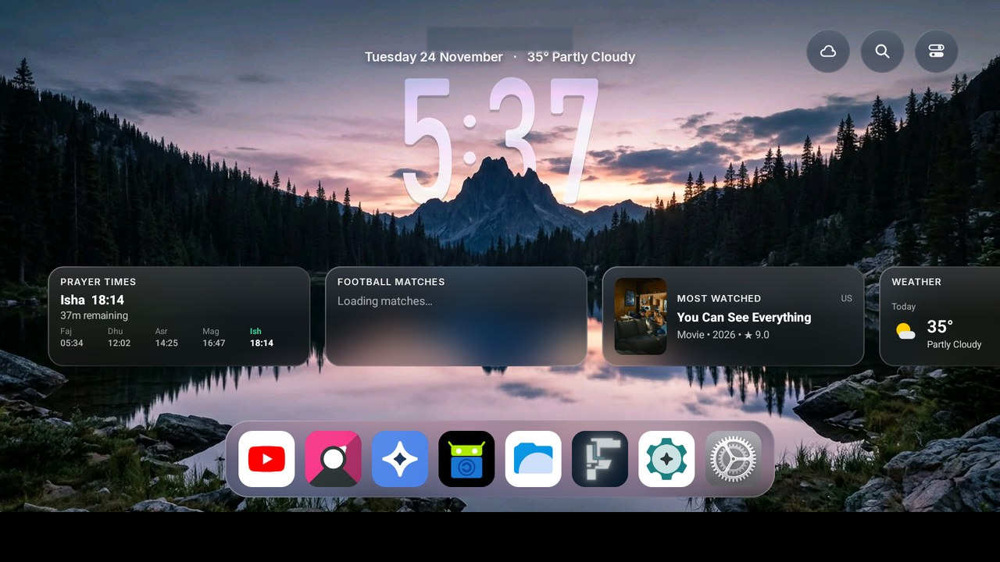
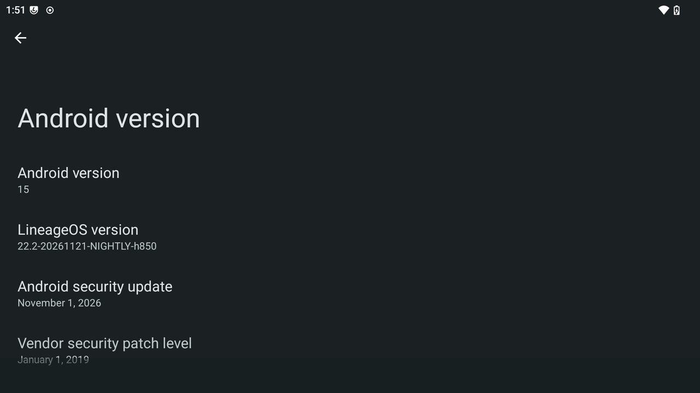
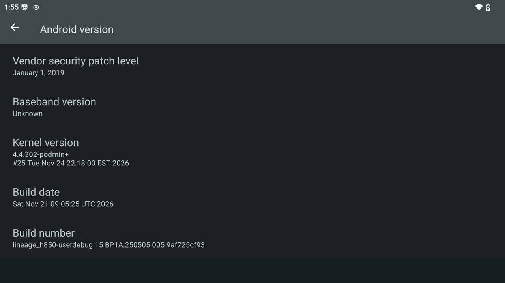
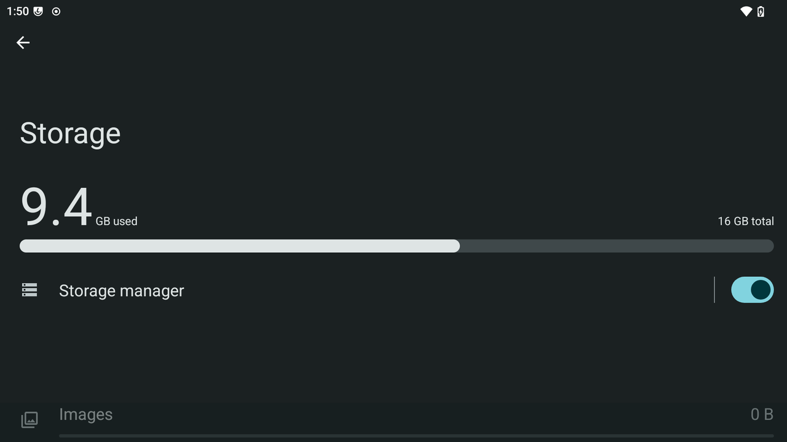

Software & TV UI
What is actually running on the Mersive Solstice Pod Gen3 (SP8096), what we have built so far, and what is still rough around the edges.
What the UI and device details look like right now
These are direct screen captures straight off the Pod. We have stripped the leftover phone apps (Dialer, Contacts, SMS, Camera, Calendar, Calculator, etc.) out of the dock so it is down to a clean single row of TV apps, though the default launcher widgets and overall look are still a work in progress.



4.4.302-podmin+)Our minimal Linux 4.4.302 kernel and LineageOS 22.2 build info.
Processor & GPU
Qualcomm Snapdragon 820 (APQ8096), quad-core Kryo (arm64-v8a), paired with an Adreno 530 GPU and Qualcomm Venus 4K hardware video decode.
Memory & storage
4 GB LPDDR4 RAM and 16 GB internal eMMC storage (around 6.6 GB free after Android 15 and starter TV apps).
What the software stack is
Stock Solstice Pods ship with a locked-down Android 7.1.1 image on Linux 3.18. We replaced that with a clean Android 15 (LineageOS 22.2) userspace running on our own minimal Linux 4.4.302 kernel.
OS & GPU base (h850 donor)
The system image, Adreno 530 GPU drivers, and Qualcomm Venus 4K hardware video decoder come from official LineageOS 22.2 for the LG G5 (h850), which shares the same MSM8996 / APQ8096 silicon. Phone-only HALs (telephony, fingerprint, sensors, NFC, and camera) are stripped out.
Wireless HALs (gemini donor)
Native Android 15 QTI Wi-Fi and Bluetooth HALs are transplanted from official LineageOS 22.2 for the Xiaomi Mi 5 (gemini) so the Pod's QCA6174A / Rome wireless module works cleanly with our upstream ath10k_pci driver.
TV launcher & apps
Because the donor build starts out as a phone image, we skip the phone setup wizard, turn off the lockscreen and sleep timer, and drop a TV launcher on top as the default home screen. We have tested tvOS-Launcher as the default home app alongside FLauncher, SmartTube, and F-Droid (grabbed directly from their upstream releases; no APKs are bundled here).
Remote & input (HDMI-CEC + Flirc)
Native HDMI-CEC works over HDMI 1 via our lightweight pod-cec-daemon (fb1/cec → /dev/uinput), so your regular TV remote drives the UI directly. A Flirc USB Gen2 IR receiver or any USB keyboard/mouse also works out of the box on the rear USB 3.0 ports.
What we have done so far
1Cold self-boot straight into Android 15
Everything lives on internal eMMC (boot, recovery, and system). Plug in power and it boots straight into Android 15 and your TV launcher with no PC connected.
2Automatic Wi-Fi and Bluetooth after boot
Our init.pod.wifi.rc waits for sys.boot_completed=1 before loading bluetooth-power.ko and the upstream ath10k_pci stack (plus a small wlan.ko shim). That way 5 GHz Wi-Fi and Bluetooth A2DP come up automatically on every boot without ever risking an early-boot lockup.
3Native 4K@60 Hz output and hardware decode
Driving TLMM GPIO 127 HIGH on boot wakes up HDMI 1 at 3840x2160@60 and 4096x2160@60 (594 MHz pixel clock), with smooth Venus 4K hardware video decode on a living room TV.
4Turnkey TV defaults on first boot
Running installer/flash-new-pod.ps1 flashes the images, marks setup complete, disables the phone Setup Wizard and lockscreen, sets screen_off_timeout to max so the Pod never sleeps mid-movie, and optionally installs any TV APKs you place in out/tv-apks/.
What is still a work in progress
Tidying up the TV UI
Right now the interface is a functional bench bring-up setup, not a finished living-room UI. Hiding leftover stock phone apps, cleaning up the launcher layout, tuning 4K DPI defaults, and making the whole couch experience feel cohesive is next.
HDMI Input (TC358840)
The Toshiba TC358840 HDMI-in bridge has its device-tree nodes drafted and still needs kernel size headroom trimmed and its V4L2 capture driver brought up. (3.5 mm stereo audio, HDMI-CEC, and msm_watchdog_v2 are all verified working!)